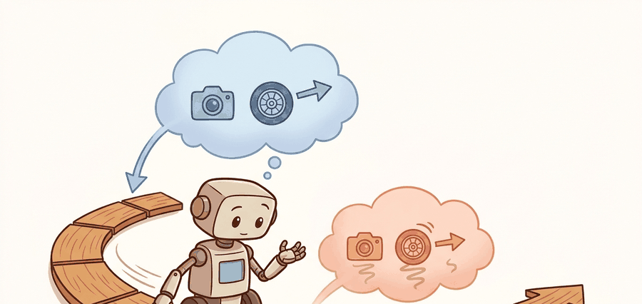

"In hardware, the rejection decision is often more important than the nominal prediction."
A Latent State That Must Survive Contact

A humanoid robot reaches into a cabinet, loses visual contact with its own hand for half a second, and must decide whether to keep pushing or pull back. No amount of offline benchmark accuracy resolves that moment: only a world model that fuses camera frames with joint torques, propagates uncertainty through occlusion, and answers fast enough to matter can keep the robot safe. As robots leave structured labs for unstructured homes and factories, visual control has become the hardest unsolved layer. This section builds the fused latent architecture that makes it work, instruments the failure modes that break hardware in practice, and covers when to hand off to a safer fallback before the model's confidence collapses.
Read this section as a deployment checklist: choose sensors, define which hidden variables matter for the task, decide whether the latent must reconstruct images or only preserve control variables, then instrument the closed-loop failures you expect in the real robot.
In hardware, the rejection decision is often more important than the nominal prediction. A world model needs a fallback story, not only a best-case story.
Problem First
A world model that looks great on benchmark rollouts can still fail the moment vision becomes ambiguous, latency spikes, or the robot makes contact. Visual control is the acid test because the learned state must handle high-dimensional sensing while preserving the low-dimensional geometry and timing that control depends on.
Core Model
A deployed visual-control latent often combines multiple sensing streams: $$z_t = f_\theta\big(\mathrm{enc}_{\text{vision}}(o_t^{1:m}), \mathrm{enc}_{\text{prop}}(q_t, \dot q_t), a_{t-1}, h_{t-1}\big).$$ This matters because vision alone rarely resolves hidden contact state, while proprioception alone rarely resolves scene structure.
The control objective remains the same, but rollout error should now be read through a safety lens: $$a_t = \pi(z_t), \qquad \text{reject if } \Pr(\text{collision or instability} \mid z_t) > \tau.$$ In practice, the world model becomes one module in a larger stack that may include a low-level stabilizer, safety filter, or reflex policy.
Visual control therefore favors representations that are task-sufficient, multimodal, and timing-aware. A perfect decoder is optional. Stable contact prediction, fast inference, and recoverable failure handling are not.
A world model that reconstructs every pixel with photographic fidelity but miscalculates foot-contact timing by 20 milliseconds is, in the language of hardware, a very expensive paperweight. The robot does not care how crisp its imagination looks; it cares whether the next step lands.
Fuse vision and proprioception before planning, monitor rollout confidence during execution, and hand off to a safer controller or reflex when the latent state becomes unreliable. A world model in hardware is part of a fallback architecture, not the whole architecture.
Minimal Probe
The probe below fuses a visual embedding with proprioception and then checks whether a simple confidence gate would reject an unsafe rollout. The logic is intentionally small, because this is the boundary every hardware stack eventually needs to expose.
# Fuse vision and proprioception, then gate execution by confidence.
# The rejection decision is often more important than the nominal action.
import numpy as np
vision_latent = np.array([0.62, 0.18, 0.51])
proprio_latent = np.array([0.55, 0.24, 0.48])
fused = 0.7 * vision_latent + 0.3 * proprio_latent
uncertainty = np.abs(vision_latent - proprio_latent).mean()
execute = uncertainty < 0.08
print({"fused_state": np.round(fused, 3).tolist(), "uncertainty": round(float(uncertainty), 3), "execute": execute}){'fused_state': [0.599, 0.198, 0.501], 'uncertainty': 0.053, 'execute': True}
Expected behavior: Execution should proceed only when the sensing streams agree closely enough for the controller to trust the fused state. If uncertainty stays high during contact or occlusion, the stack needs a fallback mode rather than a stronger decoder.
The from-scratch fusion check is about 10 lines. In practice, teams pair world-model code with maintained robotics stacks such as LeRobot, Isaac Lab, or MuJoCo-based controllers. Those stacks handle sensor synchronization, rollout logging, and hardware interfaces so the world-model engineer can concentrate on state quality and failure gating.
Practical Recipe
- Log vision-only, proprio-only, and fused-state diagnostics separately.
- Define a rejection policy for latent uncertainty before the first hardware test.
- Stress the model with lighting change, occlusion, calibration drift, and mild contact mismatch.
- Measure wall-clock latency alongside task success; a stronger latent that arrives too late is still a failure.
If visual and proprioceptive streams disagree, executing the nominal action can be less safe than doing nothing or handing off to a fallback controller. Hardware world models must be calibrated for abstention.
The uncertainty threshold $\tau$ in the rejection rule is not a hyperparameter to tune by intuition: calibrate it from logged rollouts before touching hardware. Collect 200-400 rollouts in simulation, record the per-step disagreement between sensing streams, and identify the disagreement percentile that correlates with task failure. A threshold at the 85th percentile of safe-rollout disagreement is a common starting point. When you move to hardware, tighten the threshold by 20-30% for the first sessions, because sim-to-real transfer almost always introduces new disagreement modes (lighting shifts, cable flex, floor compliance) that were absent in simulation. Log every rejection event with the full sensor state so you can audit whether the threshold is too conservative or too permissive after each session.
A humanoid stepping over clutter needs foot-contact timing, scene geometry, and body-state estimates in one loop. If the camera overexposes or the proprioception drifts, the latent may still look numerically plausible while the next foot placement becomes unsafe. Good visual-control pipelines therefore log disagreement, trigger fallback controllers, and treat world-model confidence as an operational signal.
Active research directions (2024-2026):
1. Video-native world models for robot control. Large video generation models are being adapted as general-purpose simulators for visual control: the model imagines plausible futures from a single image, and the robot policy plans within that imagined video. UniSim (Yang et al., 2024, Google DeepMind) demonstrated that a video world model pretrained on internet video could serve as a zero-shot interactive environment for downstream policy training, removing the need for task-specific simulation. The key open challenge is keeping imagined rollouts physically consistent over contact-rich sequences, where video diffusion models currently hallucinate penetration and slipping.
2. Tokenized latent world models for cross-embodiment transfer. Rather than encoding robot observations into continuous vectors, recent work tokenizes sensorimotor history into discrete tokens shared across robot morphologies. Physical Intelligence's pi0 (Black et al., 2024) and Google's RT-2-X successors train a single transformer world model across dozens of robot platforms using a unified token vocabulary, achieving generalization to unseen arm geometries. The 2024-2025 wave of humanoid-focused datasets (HumanoidBench, GROOT from NVIDIA) extends this to whole-body manipulation, where hand, wrist, and trunk tokens must be jointly imagined.
3. Real-time latent diffusion policies with hardware-grade latency. Diffusion-based action heads (Reuss et al., 2024, "Multimodal Diffusion Transformer"; Chi et al., 2024, "Universal Manipulation Interface") have closed the gap between generation quality and servo-loop latency. Consistency models and flow-matching variants (as of 2024) produce action distributions in under 5 ms on a single consumer GPU, making probabilistic world-model rollouts viable inside a 30 Hz control loop at practical scale. Physical Intelligence's pi0.5 (2025) combines flow-matching action generation with a latent world model that runs on a single NVIDIA Orin at 25 Hz on a real dexterous hand.
Open problem for a PhD student: All three directions above assume the world model's latent space is stable during physical contact, but deformable objects (cloth, dough, cables) cause abrupt latent discontinuities that the transition model cannot predict. A principled method for detecting and recovering from these contact-induced latent discontinuities in real time, without retraining, would unblock dexterous manipulation of soft objects on hardware. Current workarounds (hard resets, conservative thresholds) discard valuable state rather than exploiting the discontinuity as information.
For visual sensing failure modes, revisit Chapter 27. For contact dynamics and friction that latent rollouts often struggle with, see Chapter 6. For deployment audits and safety metrics, connect to Chapter 53.
Visual control is where world models stop being abstract. The useful representation must carry geometry, embodiment, and timing in one state. That often means a multimodal latent, a shorter imagination horizon than benchmark videos suggest, and an explicit contract for when to reject the model's advice.
Teams must also decide whether to keep an image decoder. Some keep it because reconstructions reveal what the latent forgot. Others drop it and redirect capacity to reward, value, or contact heads. The right choice depends on which failures the builder needs to diagnose and how much inference budget the controller allows. TD-MPC2 (Hansen et al., 2023) takes the decoder-free path. It drops image reconstruction entirely and runs latent Model Predictive Control (MPC) at under 10 ms per step on a single GPU, achieving strong results across 104 continuous-control tasks. A decoder-based model at the same scale can require 60-80 ms per step, making it unusable for real-time servo loops. DreamerV3 (Hafner et al., 2023) keeps the decoder and uses it to diagnose which scene parts the world model failed to encode. The reconstruction loss then doubles as a monitoring signal during deployment. This is the latency-fidelity tradeoff: decoder-free models are faster and more compact, but they lose the visual sanity-check that catches silent encoder failures.
Think of a basketball player deciding whether to pass or drive. A player who pauses to mentally replay a perfect slow-motion highlight reel of every teammate's position will produce an exquisitely accurate picture of the court, but by the time they finish imagining it the defender has already closed the gap and the window is gone. A player who compresses the scene into a quick gut-read of "left side open" and acts within the shot clock succeeds, while the perfectionist is still visualizing. Decoder-free world models are the quick gut-read: they discard photographic detail and keep only what steers the next action, arriving fast enough to matter.
This tradeoff matters physically because a robot servo loop tolerates only a fixed time budget per control step. At 30 Hz, each step has 33 ms; at 10 Hz, 100 ms. Spending 60-80 ms on pixel reconstruction leaves almost nothing for planning, communication, and actuation. On contact-rich tasks, arriving late with a beautiful prediction is worse than arriving on time with a coarser one: the joint has already moved.
The mechanism is straightforward. A decoder-based model back-propagates gradients through pixel reconstruction, forcing the latent to retain spatial detail that may be irrelevant to control. A decoder-free model back-propagates only through reward, value, or contact heads, so the latent compresses toward task-relevant geometry. Inference then skips the decoder pass entirely, cutting per-step compute by roughly 6-8x and freeing that budget for longer MPC rollouts or lower servo latency. In practice that freed budget translates directly to planning depth: a decoder-based model running 5-step lookahead in its 33 ms window can be replaced by a decoder-free model running 48-step lookahead in the same window, turning a controller that sees one move ahead into one that sees nearly ten seconds of consequences.
A common assumption is that a world model producing sharper, more photorealistic image reconstructions is a better model for visual robot control. This is wrong in the embodied AI context because reconstruction fidelity and control quality are decoupled: a decoder-based model can reproduce every pixel faithfully while arriving 60-80 ms late, which means the joint has already moved and the prediction is useless. In a 30 Hz servo loop each step allows only 33 ms total, so pixel reconstruction that consumes most of that budget leaves no room for planning or safe rejection. The correct mental model is that the latent state must be task-sufficient and timing-consistent; visual fidelity is a diagnostic convenience, not a performance metric for hardware control.
When switching from a decoder-based model such as DreamerV3 to a decoder-free model such as TD-MPC2, replace the reconstruction loss as an anomaly signal before removing the decoder. A practical substitute is the mean absolute error between the latent predicted by the transition model and the latent produced by re-encoding the next observed frame: values above the 90th percentile of training-time prediction error reliably flag distribution shift. Without an explicit replacement signal, silent encoder failures that reconstruction loss would have caught go undetected until the policy produces unsafe actions.
If a world model controls hardware from vision, can you name the fallback policy, the uncertainty signal that triggers it, and the first real-world perturbation you would run before trusting the rollout horizon?
For visual control, a world model is only as good as its multimodal state quality, latency budget, and fallback behavior under uncertainty.
Design a rejection policy for a camera plus proprioception world model on a mobile manipulator. Which signal would trigger the fallback controller, and how would you test that threshold before deployment?
Project Ideas
Beginner (weekend): Visual uncertainty gate in MuJoCo. Build a Gymnasium environment using MuJoCo's Ant or HalfCheetah, train a simple world model that fuses a downsampled camera observation with joint positions, and implement the confidence gate from Code Fragment 1 to pause the agent when sensing streams disagree. The key challenge is choosing a disagreement metric that correlates with task failure without being so conservative that the agent freezes on every minor perturbation.
Intermediate (1-2 weeks): Decoder-free latent MPC on a PyBullet arm. Reproduce the decoder-free design of TD-MPC2 at small scale using PyBullet's Kuka arm: train a latent transition model with only a reward head and a contact-prediction head, run shooting-based MPC in latent space, and measure per-step inference time against a DreamerV3-style reconstruction baseline. The key challenge is replacing reconstruction loss with a latent-prediction error signal that still flags distribution shift when the arm enters occluded poses, without access to pixel supervision.
Advanced (2-4 weeks): Sim-to-real uncertainty calibration with LeRobot. Use Isaac Lab to collect rollouts from a simulated Franka arm under randomized lighting and cable-flex perturbations, calibrate the rejection threshold following the 85th-percentile recipe from this section, then transfer the trained world model to a physical arm using LeRobot's hardware interface and logging stack. The key challenge is that sim-to-real transfer introduces disagreement modes (floor compliance, real camera noise) absent in simulation, so the threshold calibrated in sim must be tightened systematically across the first hardware sessions without requiring full retraining.
Bibliography & Further Reading
Primary References And Tools
Hafner, D. et al.. "Mastering Diverse Domains through World Models." (2023). https://arxiv.org/abs/2301.04104
DreamerV3 remains the main reference for vision-based latent control at scale.
Hansen, N., Su, H., and Wang, X.. "TD-MPC2: Scalable, Robust World Models for Continuous Control." (2023). https://openreview.net/forum?id=Oxh5CstDJU
TD-MPC2 highlights the latency-sensitive, decoder-free end of the design spectrum.
Hugging Face. "LeRobot." (2024). https://github.com/huggingface/lerobot
LeRobot is a practical reference for the logging, dataset, and policy infrastructure that visual-control teams actually use.